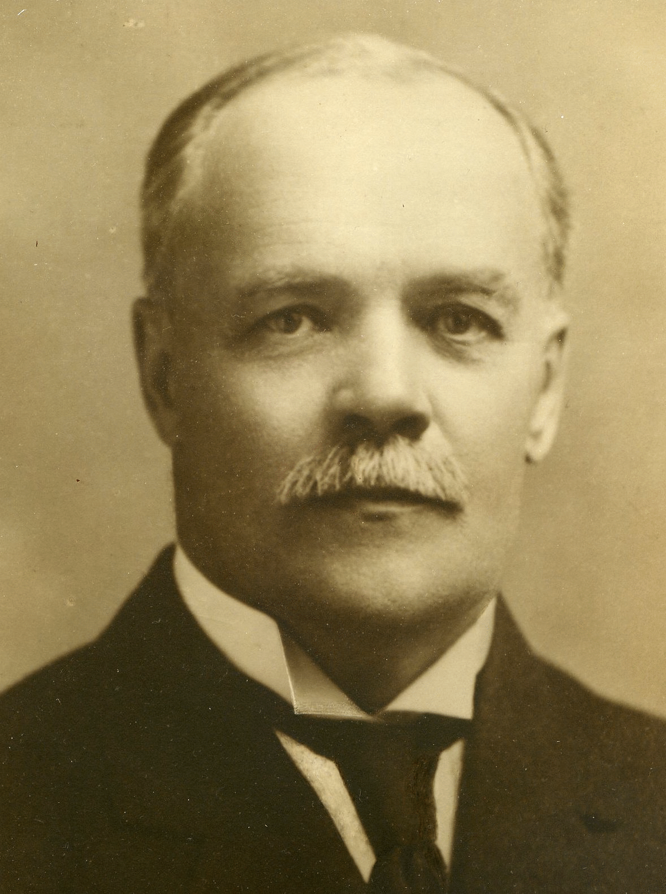
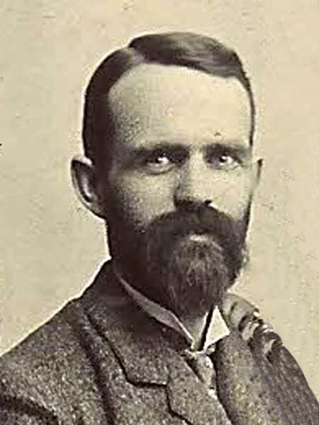

-1-MasterItem.svg)
Stories of Westminster United Church & its People / Page
19
PETER CAMPBELL MCINTYRE, BUSINESSMAN
Peter was born in Lanark County, Ontario on February 5, 1854; one of four sons
of Hugh and Janet McIntyre. He received his education in local public schools
and
the Perth College Institute. Peter’s first work was in teaching from 1872 to 1878, at
which time he and his brothers moved to Winnipeg. He eventually left teaching
to enter a business partnership with his brother, John. They opened the first
job-
printing office in the city, located on McDermott Avenue. (Incidentally, their
brother Doug was business manager of the first
Winnipeg Sun
, and worked later
for the
Manitoba Free Press
and eventually the
Winnipeg Tribune
.) Peter served as
chairman of the Winnipeg Public School Board from 1885 to 1890 and as a Liberal
member Manitoba
Legislature, representing North Winnipeg, from 1892 to 1900. He was appointed
the Winnipeg
postmaster in 1900. He also served as Vice-President of the Home Investment and
Savings
Association, and was a Director of the Great-West Life Assurance Company and
Standard Trusts
Company. He married Emily Kerr of Minneapolis in 1892 (the same year he became a
co-founder
of Westminster Church). He was a member of the Manitoba Club, St. Charles
Country Club,
and Canadian Club of Winnipeg; facts from which we can practically deduce that
he was also
an avid golfer, curler, and Presbyterian, all of which he reportedly was. Peter
died at Winnipeg
in the fall of 1920.
ROBERT HANCE SHANKS, ACCOUNTANT
Robert was born in Ontario (in 1858) and moved in his early 20s to Winnipeg,
where he worked as a skilled white-collar professional (an accountant) and spent
his free time volunteering for various civic organizations (with Westminster
United Church, as Chair of the Board of Evaluation and Revision for the City of
Winnipeg, as a member of the charitable Ancient Order of United Workmen, and
as Secretary for the University of Manitoba Land Board). If researchers were to
invent a term to denote someone who perfectly matches a given demographic
profile, as Shank does that of Westminster’s founders, they might call that
someone ‘a Robert.’ The present writer has tried to dig up more distinguishing


Our Founders